Lesson105–106 本地验收证据
小禾与欧阳小禾同学为虚构测试账号，不是体验同学的学习结果。本地检查不替代教师审阅、儿童体验、实体手机微信保存或实际打印。
设计与验收 · 结果摘要 · 逐帧检查
老板说明信的问题，长句与中文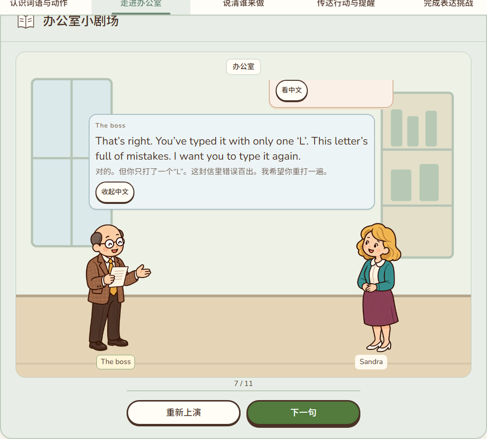
320：对白在场景内，人物完整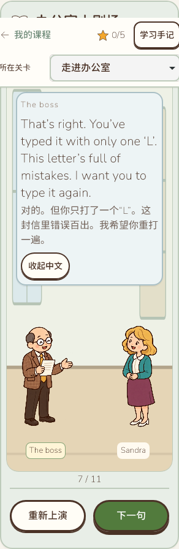
老板与Bob开场，只有教材问题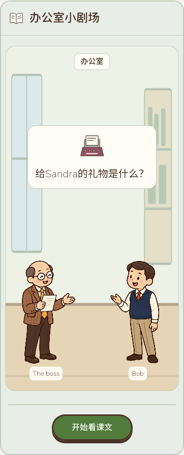
第四轮切换Sandra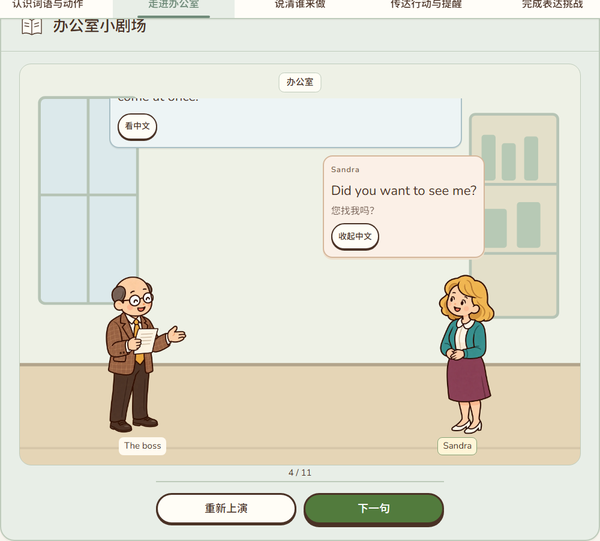
原文揭晓后才出现词典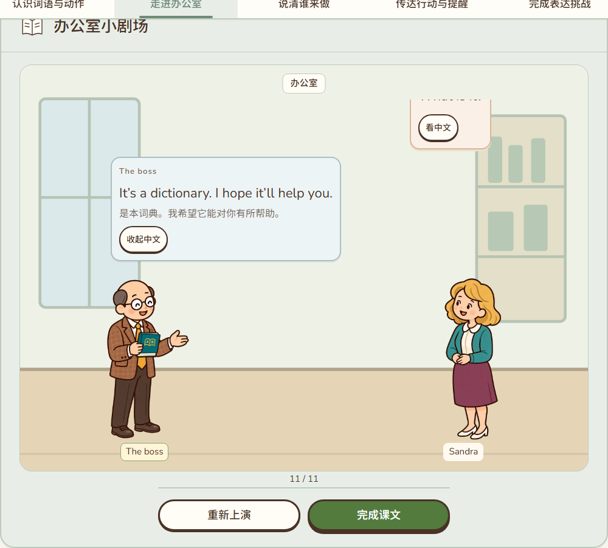
宾格与原形两空，未填齐不能检查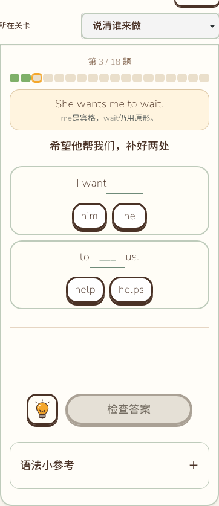
否定范围的意义对比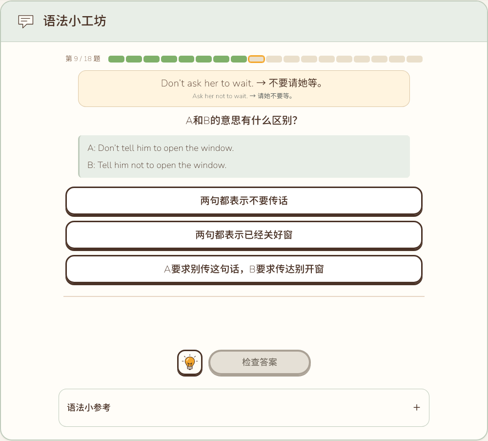
人物明确的反身代词转换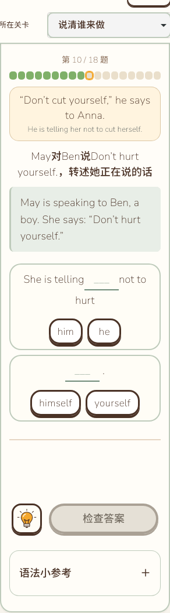
撤去示范后的独立组句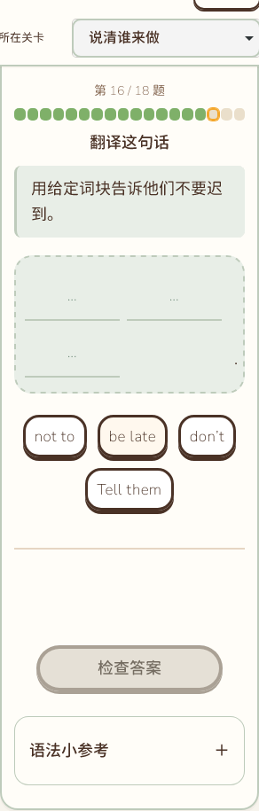
未答任务卡明确人物与动作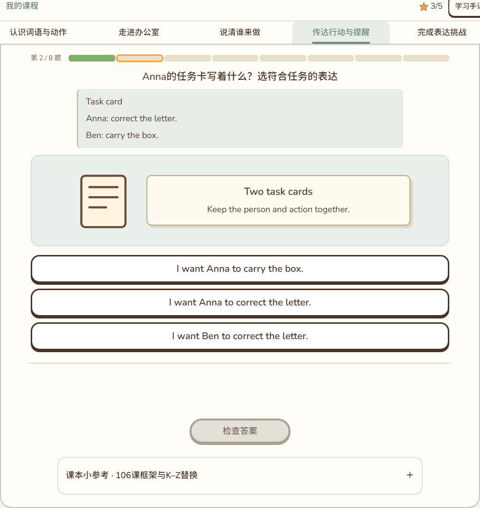
词典、信与礼物图词对应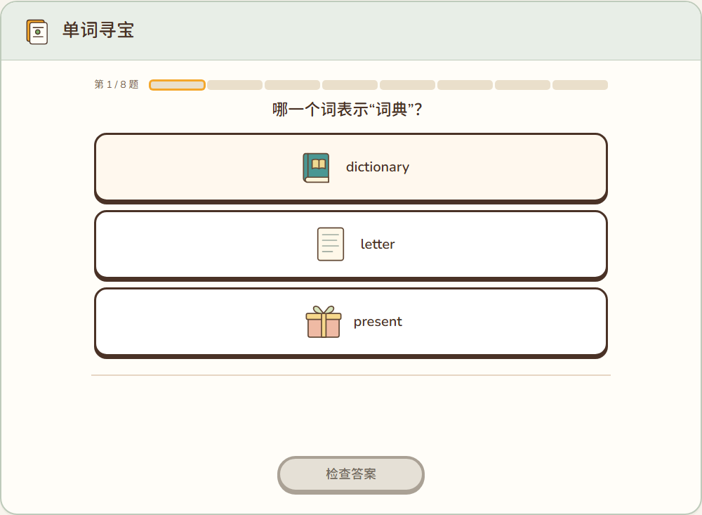
短屏三卡和完成操作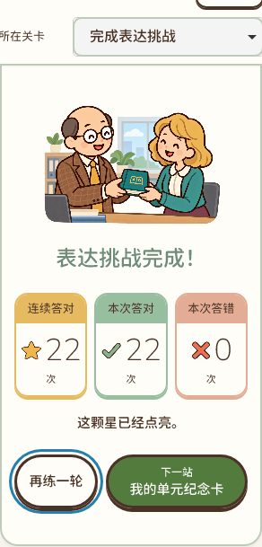
末组自然四词，音标与翻面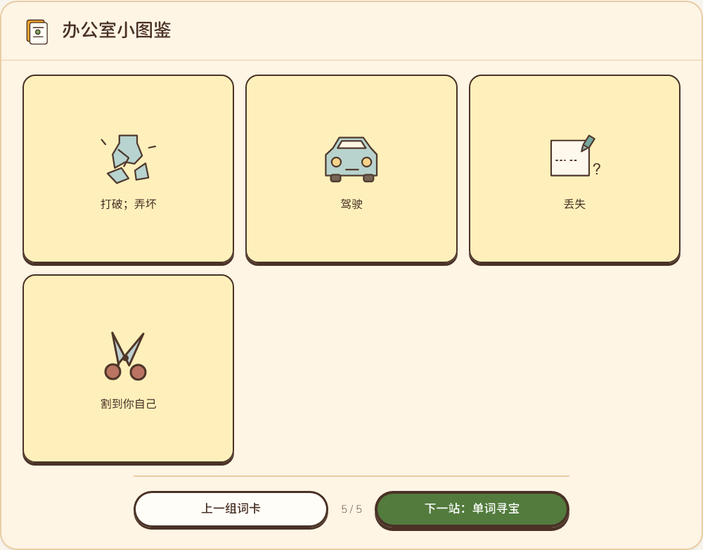
A6／B8／C6／D6完整书写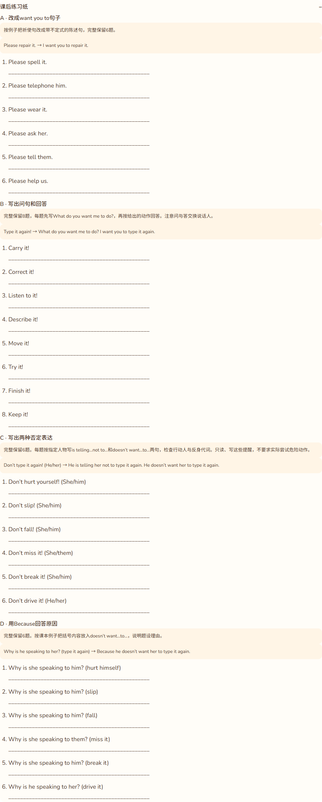
测试账号手机五星卡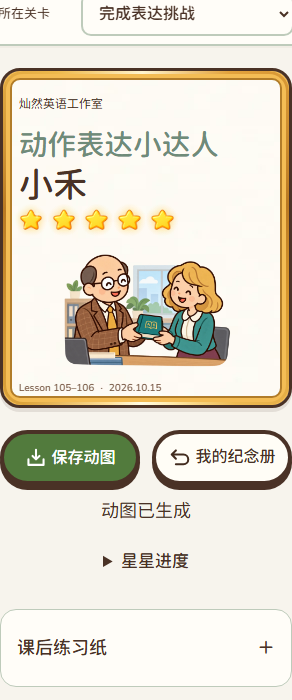
实际五星GIF第15帧纪念册放大卡长姓名手机卡同姓名一星比较 Lesson 1-2 同姓名一星比较 Lesson 3-4
同姓名一星比较 Lesson 3-4 同姓名一星比较 Lesson 5-6
同姓名一星比较 Lesson 5-6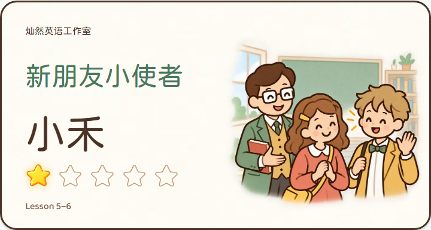
同姓名一星比较 Lesson 105-106实际一星动图实际五星动图